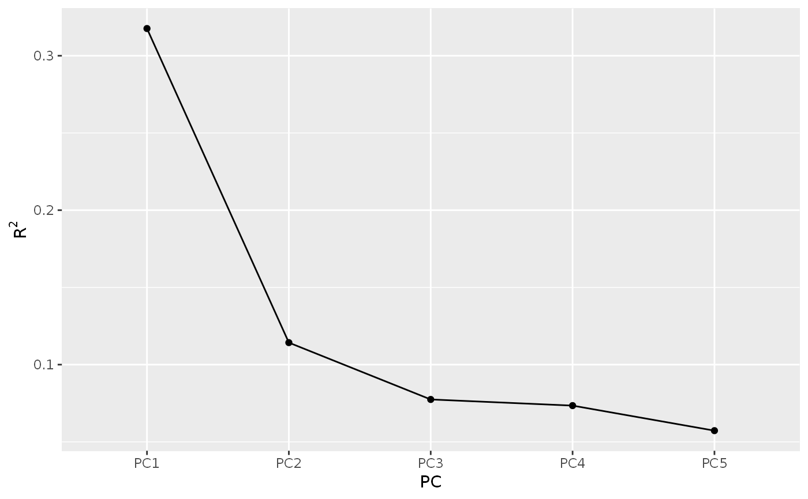
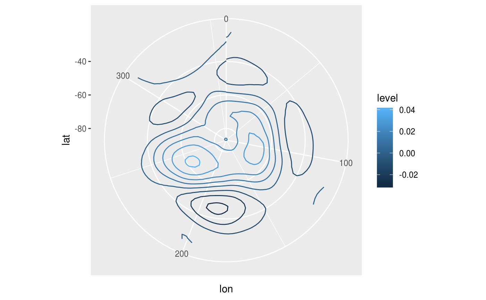
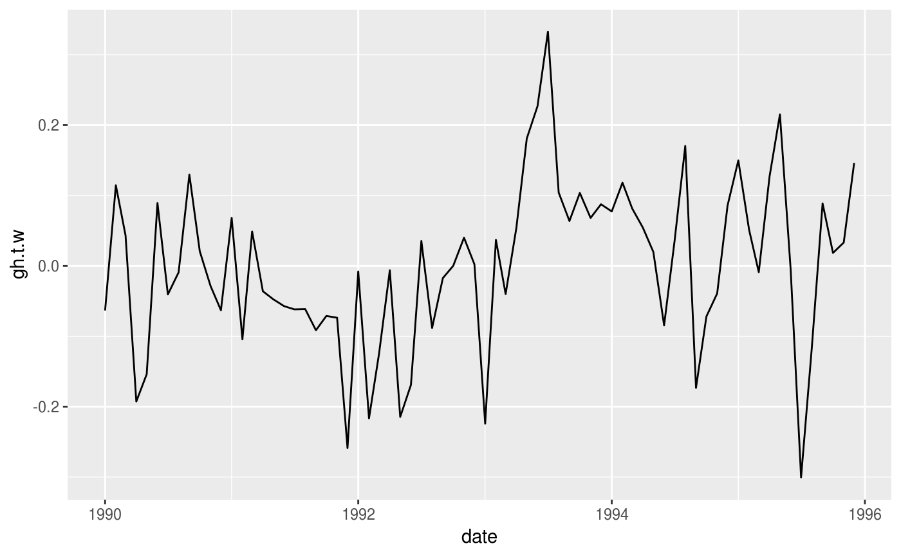
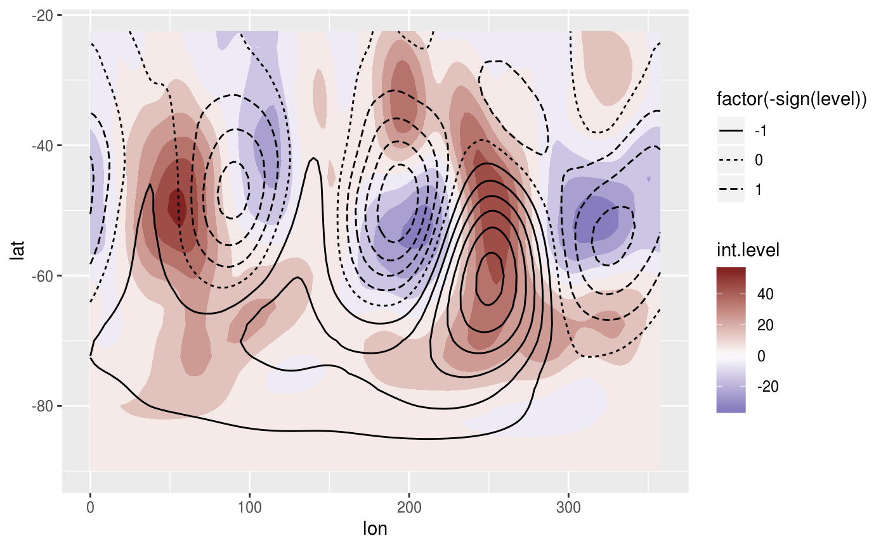

Computes Singular Value Decomposition (also known as Principal Components Analysis or Empirical Orthogonal Functions).
EOF(
formula,
n = 1,
data = NULL,
B = 0,
probs = c(lower = 0.025, mid = 0.5, upper = 0.975),
rotate = NULL,
suffix = "PC",
fill = NULL,
engine = NULL
)a formula to build the matrix that will be used in the SVD decomposition (see Details)
which singular values to return (if NULL, returns all)
a data.frame
number of bootstrap samples used to estimate confidence intervals. Ignored if <= 1.
the probabilities of the lower and upper values of estimated confidence intervals. If named, it's names will be used as column names.
a function to apply to the loadings to rotate them. E.g. for
varimax rotation use stats::varimax.
character to name the principal components
value to infill implicit missing values or NULL if the
data is dense.
function to use to compute SVD. If NULL it uses irlba::irlba
(if installed) if the largest singular value to compute is lower than half the maximum
possible value, otherwise it uses base::svd. If the user provides a function,
it needs to be a drop-in replacement for base::svd (the same arguments and
output format).
An eof object which is just a named list of data.tables
data.table with left singular vectors
data.table with right singular vectors
data.table with singular values, their explained variance, and, optionally, quantiles estimated via bootstrap
There are some methods implemented
Singular values can be computed over matrices so formula denotes how
to build a matrix from the data. It is a formula of the form VAR ~ LEFT | RIGHT
(see Formula::Formula) in which VAR is the variable whose values will
populate the matrix, and LEFT represent the variables used to make the rows
and RIGHT, the columns of the matrix. Think it like "VAR as a function of
LEFT and RIGHT". The variable combination used in this formula must identify
an unique value in a cell.
So, for example, v ~ x + y | t would mean that there is one value of v for
each combination of x, y and t, and that there will be one row for
each combination of x and y and one row for each t.
In the result, the left and right vectors have dimensions of the LEFT and RIGHT
part of the formula, respectively.
It is much faster to compute only some singular vectors, so is advisable not
to set n to NULL. If the irlba package is installed, EOF uses
irlba::irlba instead of base::svd since it's much faster.
The bootstrapping procedure follows Fisher et.al. (2016) and returns the standard deviation of each singular value.
Fisher, A., Caffo, B., Schwartz, B., & Zipunnikov, V. (2016). Fast, Exact Bootstrap Principal Component Analysis for p > 1 million. Journal of the American Statistical Association, 111(514), 846–860. doi:10.1080/01621459.2015.1062383
Other meteorology functions:
Derivate(),
GeostrophicWind(),
WaveFlux(),
thermodynamics,
waves
# The Antarctic Oscillation is computed from the
# monthly geopotential height anomalies weighted by latitude.
library(data.table)
data(geopotential)
geopotential <- copy(geopotential)
geopotential[, gh.t.w := Anomaly(gh)*sqrt(cos(lat*pi/180)),
by = .(lon, lat, month(date))]
#> lon lat lev gh date gh.t.w
#> <num> <num> <int> <num> <Date> <num>
#> 1: 0.0 -22.5 700 3163.839 1990-01-01 -3.824174e+00
#> 2: 2.5 -22.5 700 3162.516 1990-01-01 -3.591582e+00
#> 3: 5.0 -22.5 700 3162.226 1990-01-01 -2.862909e+00
#> 4: 7.5 -22.5 700 3162.323 1990-01-01 -2.403045e+00
#> 5: 10.0 -22.5 700 3163.097 1990-01-01 -2.067122e+00
#> ---
#> 290300: 347.5 -90.0 700 2671.484 1995-12-01 -1.449750e-07
#> 290301: 350.0 -90.0 700 2671.484 1995-12-01 -1.449750e-07
#> 290302: 352.5 -90.0 700 2671.484 1995-12-01 -1.449750e-07
#> 290303: 355.0 -90.0 700 2671.484 1995-12-01 -1.449750e-07
#> 290304: 357.5 -90.0 700 2671.484 1995-12-01 -1.449750e-07
eof <- EOF(gh.t.w ~ lat + lon | date, 1:5, data = geopotential,
B = 100, probs = c(low = 0.1, hig = 0.9))
# Inspect the explained variance of each component
summary(eof)
#> Importance of components:
#> Component Explained variance Cumulative variance
#> 1 32% 32%
#> 2 11% 43%
#> 3 8% 51%
#> 4 7% 58%
#> 5 6% 64%
screeplot(eof)

# Keep only the 1st.
aao <- cut(eof, 1)
# AAO field
library(ggplot2)
ggplot(aao$left, aes(lon, lat, z = gh.t.w)) +
geom_contour(aes(color = after_stat(level))) +
coord_polar()

# AAO signal
ggplot(aao$right, aes(date, gh.t.w)) +
geom_line()

# standard deviation, % of explained variance and
# confidence intervals.
aao$sdev
#> PC sd r2 low hig
#> <ord> <num> <num> <num> <num>
#> 1: PC1 7050.352 0.3176266 6284.91 7899.572
# Reconstructed fields based only on the two first
# principal components
field <- predict(eof, 1:2)
# Compare it to the real field.
ggplot(field[date == date[1]], aes(lon, lat)) +
geom_contour_fill(aes(z = gh.t.w), data = geopotential[date == date[1]]) +
geom_contour2(aes(z = gh.t.w, linetype = factor(-sign(stat(level))))) +
scale_fill_divergent()
#> Warning: `stat(level)` was deprecated in ggplot2 3.4.0.
#> ℹ Please use `after_stat(level)` instead.
